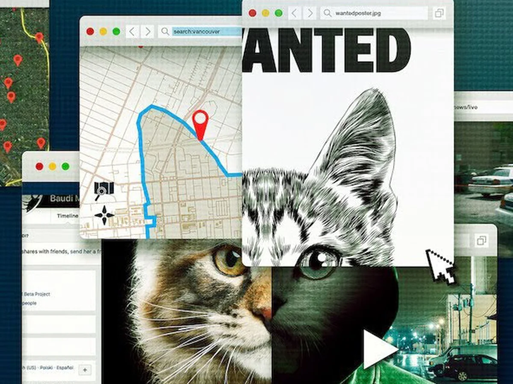
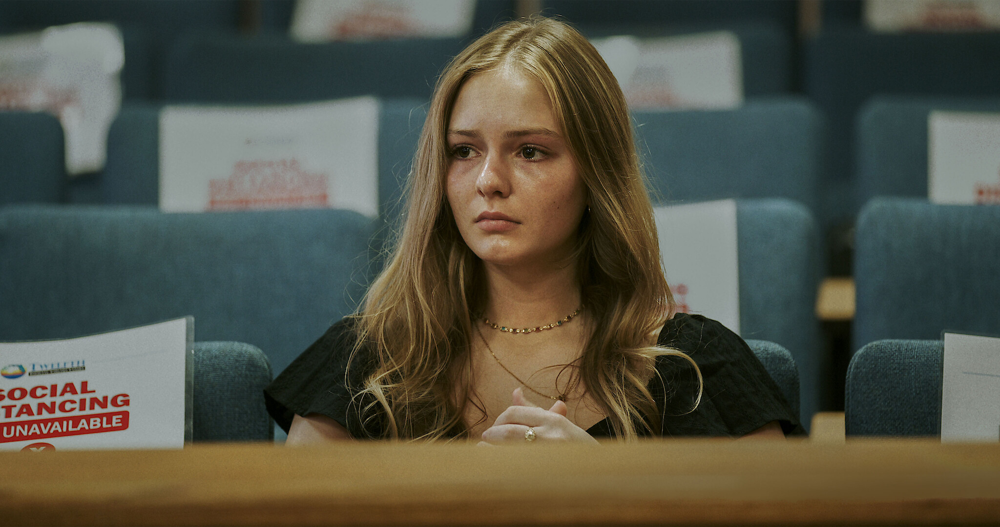

Documentary Database
Heaven's Gate The Cult of Cults
American Murder: The Family Next Door
Unknown Number: The High School Catfish
Turning Point: 911 and The War on Terror

Don't F**k With Cats: Hunting an Internet Killer
Shiny Happy People
Sins of Our Mother

Take Care of Maya
Abducted in Plain Sight
Dark Side of the 90s
One Child Nation